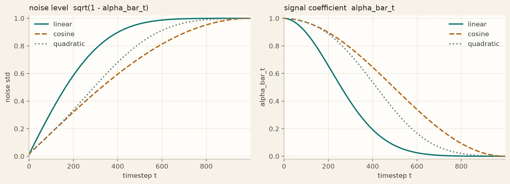
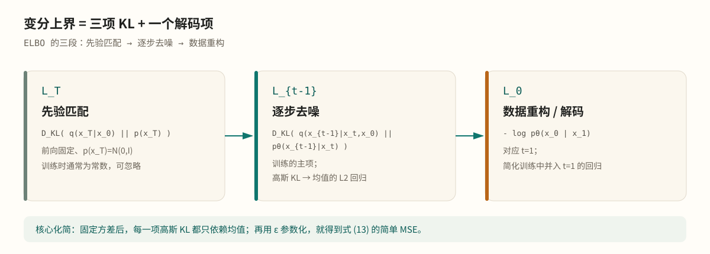

记
阅读说明
这是一篇原理笔记，不是论文翻译。记号沿用 DDPM 原文；公式按本文顺序编号，引用原文时会标注论文式号。图表由笔记重绘。
Abstract / 导读
DDPM 的核心并不是“训练一个网络直接画图”，而是把生成问题改写成一条从数据到噪声、再从噪声回到数据的概率链。前向过程固定、可解；逆向过程用神经网络近似；训练目标来自变分下界；最终的学习信号可以化简成“预测每一步加入的噪声”。本文按“前向 → 后验 → ELBO → 噪声回归 → score → 采样”的顺序，把这套数学完整拆开。
变分推断高斯链ELBOε-预测score matching
01生成问题：为什么要一条链 #
我们有一批来自未知分布 pdata(x0) 的图像 x0，想学一个模型 pθ(x0)，使它能够采样出类似的数据。
DDPM 引入一组与图像同维的潜变量
并定义两条链：
- 前向过程 q(x1:T∣x0)：固定不变，逐步向图像加高斯噪声；
- 逆向过程 pθ(x0:T)：带参数，学习从噪声逐步去噪。
前向过程把复杂的数据分布逐渐抹平成简单的标准高斯；逆向过程则试图沿着相反方向，把标准高斯推回数据分布。生成模型就是逆向过程：
训练目标是让 pθ(x0) 尽量接近 pdata(x0)；但直接最大化 logpθ(x0) 需要对所有潜变量积分，无法直接计算。于是我们用变分推断，优化一个可计算的上界。
02前向过程：一条线性高斯链 #
定义噪声强度 β1,…,βT∈(0,1)，并记
前向一步是
也就是
这里乘 αt 是为了让方差大致保持不变：如果 xt−1 的各坐标近似单位方差，那么 xt 的方差也近似为 1。
由于每一步都是线性高斯的，整条链可以“跳步”采样。把上式反复展开，得到闭式：
等价地：
这个式子非常重要：它说明任意噪声级别的 xt 都可以由原图 x0 和一个标准高斯噪声直接构造，不需要真的跑 t 步前向。
当 t 很小时，αˉt≈1，xt 仍然很像原图；当 t 接近 T 时，αˉT≈0，xT 近似纯噪声。噪声调度决定了这个“破坏”过程有多快。
 图 1前向过程 q(xt∣xt−1) 与逆向过程 pθ(xt−1∣xt) 的有向图模型。DDPM 论文，图 2
图 1前向过程 q(xt∣xt−1) 与逆向过程 pθ(xt−1∣xt) 的有向图模型。DDPM 论文，图 2

图 2常见噪声调度下的噪声标准差 1−αˉt 与信号系数 αˉt。线性调度在中段衰减更快；余弦调度在两端更平滑。笔记重绘
前向过程没有任何可学习参数。这个选择不是偷懒，而是整个方法可解的前提：后验、ELBO、训练目标都依赖于前向过程是已知的线性高斯链。
03逆向过程与后验 #
逆向过程定义为
在 DDPM 中，协方差通常固定为 σt2I，网络只学习均值 μθ。为什么可以只学均值？因为当我们把逆向一步写成“从 pθ 中采样”时，训练目标最终主要约束均值；固定方差已经能取得很好的样本质量，学习方差还会增加不稳定性。
后验到底在说什么 #
“后验”是给定观测后，隐变量的条件分布。这里我们真正需要的单步后验是
翻成人话：
已知干净原图 x0，又已知第 t 步的带噪图 xt，那么中间那张 xt−1 应该是什么样？
它不是确定值，而是一个分布：从 x0 到 xt 的加噪路径不唯一，xt−1 有多个可能。
为什么可解 #
由贝叶斯公式：
右边两项都是高斯：
- q(xt∣xt−1)=N(αtxt−1,βtI)；
- q(xt−1∣x0)=N(αˉt−1x0,(1−αˉt−1)I)。
两个高斯相乘，结果仍是高斯。配方后得到：
其中
直觉：两个高斯线索的精度加权 #
把后验均值理解成两个“线索”的加权融合：
- 从 xt 倒推：xt=αtxt−1+噪声，所以 xt−1≈xt/αt，方差 βt/αt，精度 αt/βt；
- 从 x0 前推：xt−1=αˉt−1x0+噪声，方差 1−αˉt−1，精度 1/(1−αˉt−1)。
后验的精度是两个精度之和：
所以方差为
均值为“精度 × 估计”的加权平均，化简后正是式 (5)。这解释了那些看起来奇怪的系数：它们不是随手拼出来的，而是两个高斯信息源的精度权重。
一个具体数字例子 #
取 β=0.1，所以 α=0.9；αˉ1=0.9，αˉ2=0.81。假设 x0=0，观测到 x2=0.5。代入 t=2：
方差约为 0.053，标准差约 0.23。也就是说，知道路径的起点和终点后，中间点最可能在 0.25 附近，但仍有一个不确定范围。到了 t=1，后验直接退化成 x0，方差为 0。
采样时没有 x0 #
后验公式需要 x0，但生成时没有原图。于是用网络从 xt 估计 x0。由式 (2)：
如果把 ϵ 换成网络预测的 ϵθ(xt,t)，再代回式 (5)，就得到实际使用的逆向均值：
这一步是整个 DDPM 的核心：训练时用真实 x0 定义后验；采样时用网络估计的 x0 代替。
04变分上界：把生成写成可优化问题 #
直接最大化 logpθ(x0) 需要对 x1:T 积分。变分推断给出一个可计算的上界：
把联合分布和近似后验都按马尔可夫链展开，并利用贝叶斯公式，可以把 L 拆成三项：
其中
三项的含义分别是：
- LT：先验匹配。前向方差固定、p(xT)=N(0,I) 时，它是常数，训练时可以忽略；
- Lt−1：逐步去噪。它比较真实后验与网络逆向一步，是训练的主项；
- L0：数据重构。对应最后一步从 x1 解码到 x0，在简化目标里并入 t=1 的回归项。

图 3变分上界的三段结构。前向过程固定后，LT 是常数；真正训练网络的是中间的 KL 项与最后的解码项。笔记重绘
05从 KL 到噪声回归 #
在 pθ 的方差固定为 σt2I 时，Lt−1 是两个高斯之间的 KL。高斯 KL 的公式告诉我们，它只依赖均值之差：
其中 C 与 θ 无关。于是训练网络就变成了“让预测均值接近真实后验均值”。
把式 (5) 和式 (7) 代入，并用
重参数化，可以得到
这就是“预测噪声”的由来：均值之差经过代数化简后，正好变成噪声之差。
DDPM 进一步丢掉式 (12) 前面的权重，得到
t 在 1,…,T 中均匀采样。这个目标仍然是变分上界的一个加权版本，只是权重不同；实验上它训练的模型样本质量更好。直观原因是：式 (12) 的权重会压低小 t 项，让网络把注意力放在噪声更大、去噪更困难的时间步上。
Algorithm 1 · 训练DDPM training
- repeat
- 采样 x0∼q(x0)
- 采样 t∼Uniform({1,…,T})
- 采样 ϵ∼N(0,I)
- 对以下目标做梯度下降：
- ∇θϵ−ϵθ(αˉtx0+1−αˉtϵ,t)2
- until 收敛
06ε-预测就是 score matching #
这一节解释“为什么预测噪声能生成图像”，而不只是“能重建噪声”。
对每个 t，加噪后的数据分布记作
它是原数据分布被高斯核平滑后的结果。定义 score 为对数密度的梯度：
score 指向“概率更高的方向”。在加噪分布上，它告诉我们从当前带噪图像往哪里走，能更接近数据流形。
对单个 x0，条件 score 是
边缘 score 是条件 score 的期望：
而式 (13) 的均方误差最优解，正是条件期望：
代回式 (14)：
所以预测噪声 = 估计 score，只差一个与 t 有关的缩放。
由 Tweedie 公式，还可以从噪声预测直接得到条件均值：
这和式 (7) 完全一致。
在连续时间极限下，逆向过程可以写成随机微分方程：
DDPM 的离散逆向链，就是对这个过程的近似。采样时沿着 score 走，本质上是在做退火的 Langevin 动力学：先在大噪声下确定粗结构，再在小噪声下补细节。
这也解释了为什么“预测噪声”不是目的：它是估计数据分布梯度的一种参数化方式。网络学的是一整个随 t 变化的向量场，而不是某一张图。
07采样：沿 score 走回数据 #
有了 μθ，逆向一步就是
其中 σt2 可以取 βt，也可以取后验方差 β~t；DDPM 论文发现两者效果相近。x0 的方差为 0，所以最后一步不再加噪声。
Algorithm 2 · 采样DDPM sampling
- xT∼N(0,I)
- for t=T,…,1 do
- z∼N(0,I)，若 t>1；否则 z=0
- xt−1=αt1(xt−1−αˉtβtϵθ(xt,t))+σtz
- end for
- return x0
这里每一步都保留随机性。这个随机项不是装饰：它让采样从条件后验中抽样，而不是只取条件均值；不同的 xT 会走出不同轨迹，因此同一模型可以生成很多张不同的图。
DDIM 则去掉随机项，沿着一条确定性轨迹走，可以用更少的步数采样。它的更新式与式 (18) 不同，但目标相同：从噪声推进到数据分布。工程上的取舍见《DDPM 的工程实现》。
08为什么有效，以及它不保证什么 #
为什么有效 #
- 分布传输：前向过程把复杂数据分布变成简单高斯；逆向过程学习这个传输的逆。若网络完美，逆向链的边际分布就与真实数据分布一致。
- 从粗到细：高噪声阶段 score 只包含大尺度结构，低噪声阶段才包含纹理细节；多步采样相当于不断细化。
- 不是查表：训练覆盖所有 x0、t、ϵ，网络学的是条件期望/score 场，而不是某张训练图。
- 随机性带来多样性：每步注入校准噪声，让采样覆盖分布，而不是塌缩到一个均值。
它不保证什么 #
- 无条件 DDPM 不保证输出是某张“原来的图”。采样时没有原图输入，只有随机 xT；
- 它不保证生成用户想要的语义。没有类别、文本或参考图条件时，只能从训练数据所在的领域里随机采样；
- 它不保证小步数下质量不变。步数太少、调度不匹配、模型容量不足都会导致模糊或伪影；
- 如果从带噪原图出发，逆向过程会保留原图信息，这时才更接近“重建/修复”。
09公式速查 #
表 1DDPM 的核心公式。
| 概念 | 公式 |
|---|
| 前向一步 | q(xt∣xt−1)=N(αtxt−1,βtI) |
| 闭式加噪 | xt=αˉtx0+1−αˉtϵ |
| 单步后验 | q(xt−1∣xt,x0)=N(μ~t,β~tI) |
| 后验均值 | μ~t=1−αˉtαˉt−1βtx0+1−αˉtαt(1−αˉt−1)xt |
| 简化目标 | Lsimple=E∥ϵ−ϵθ(xt,t)∥2 |
| 噪声与 score | ϵθ≈−1−αˉt∇logqt(xt) |
| 逆向均值 | μθ=αt1(xt−1−αˉtβtϵθ) |
| 逆向采样 | xt−1=μθ+σtz |
10延伸阅读 #